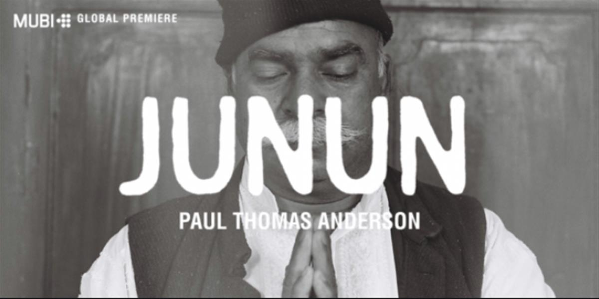

Film follows Radiohead guitarist and Israeli composer Shye Ben Tzur recording alongside Indian musicians
Radiohead guitarist Jonny Greenwood, producer Nigel Godrich and Israeli composer Shye Ben Tzur journeyed to Rajasthan in northwest India to record alongside regional musicians known as the Rajasthan Express. The result of those month-long recording sessions was Junun, Paul Thomas Anderson’s documentary that captures the collaboration at work. In this exclusive preview for the film, we witness Greenwood, Ben Tzur and their band of musicians crafting their “junun” – Hindu for “mania,” or “the madness of love” – at the 15th-century Mehrangarh Fort.
Following its debut at the New York Film Festival on October 8th, Junun will have its worldwide premiere at MUBI.com on October 9th. An “online cinematheque,” MUBI is a global subscription video-on-demand service that caters to cinephiles. “We’re huge fans of MUBI and wanted to be a part of what they do,” Anderson said in a statement. “Hopefully people will discover both the music that’s been made by Shye and Jonny and a great place to watch films.”
The recording sessions featured in Junun took place during Spring 2015. “It’s been amazing, actually, working with Indian musicians. They have such a different energy and enthusiasm for music,” Greenwood told The Guardian of the project. “It’s just, it’s part of life here, it feels, rather than just being an occupation. It’s different; there’s music everywhere. Like when we’re playing and recording or rehearsing with these musicians, when they take a break, they go and play more. That’s not true in England. We just take a break. But here, it’s just this urge to make music, and it’s really inspiring.”
Anderson and Greenwood first collaborated in 2007, when the Radiohead guitarist created the score for the director’s Oscar-nominated drama There Will Be Blood. Greenwood would later compose the original music for Anderson’s next two films, 2012’s The Master and 2014’s Inherent Vice, with the latter featuring an unreleased Radiohead song titled “Spooks” that was re-recorded for the Thomas Pynchon adaptation.
The NYFF’s program said the hour-long documentary “lives and breathes music, music-making, and the close camaraderie of artistic collaboration. It’s a lovely impressionistic mosaic and a one-of-a-kind sonic experience: the music will blow your mind.”
SOURCE: ROLLING STONE


SOURCE: ROLLING STONE